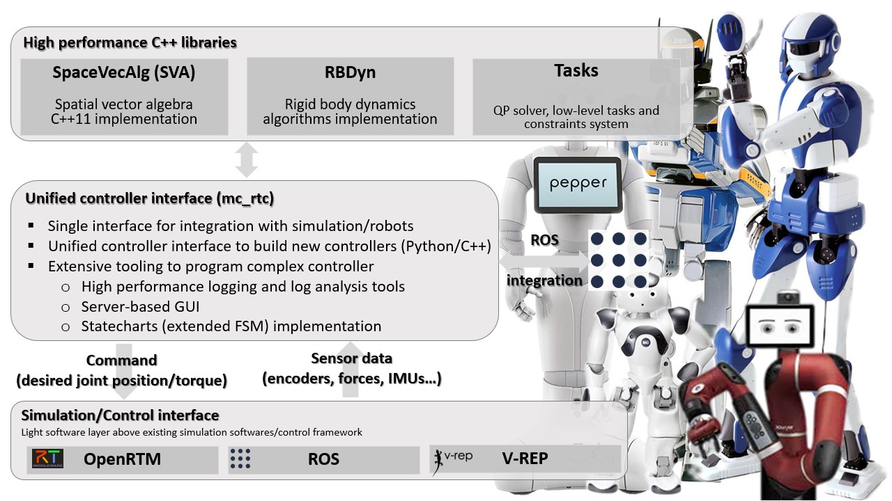

mc_rtc::Configuration general purpose configurationmc_rtc is an interface for simulation and robot control systems. These systems should provide the state of a given robot (joints’ values, sensor readings…) and in return mc_rtc will provide the desired robot’s state (command). This is done through the mc_control::MCGlobalController class. This class does not perform control by itself but rather delegates this task to the mc_control::MCController derived objects that it holds. Writing a controller within the mc_rtc framework is done by writing a class that inherits from the mc_control::MCController base class and implements the required functionnality. We implement such a controller in the following tutorials. The present tutorial simply explains how to build/install the framework on your machine.

We provide binary installation for current Ubuntu LTS releases. We also provide a source release using an easy-to-use script for Ubuntu, macOS and Windows.
# Make sure you have required tools
sudo apt install apt-transport-https lsb-release ca-certificates gnupg
# Add our key
sudo apt-key adv --keyserver 'hkp://keyserver.ubuntu.com:80' --recv-key 892EA6EE273707C6495A6FB6220D644C64666806
# Add our repository
sudo sh -c 'echo "deb https://dl.bintray.com/gergondet/multi-contact-release $(lsb_release -sc) main" | \
sudo tee /etc/apt/sources.list.d/multi-contact.list'
# Update packages list
sudo apt update
# Install packages
sudo apt install libmc-rtc-dev mc-rtc-utils python3-mc-rtc
# Assuming you have a ROS distribution mirror setup
sudo apt install ros-${ROS_DISTRO}-mc-rtc-plugin# Make sure you have required tools
sudo apt install apt-transport-https lsb-release ca-certificates gnupg
# Add our key
sudo apt-key adv --keyserver 'hkp://keyserver.ubuntu.com:80' --recv-key 892EA6EE273707C6495A6FB6220D644C64666806
# Add our repository
sudo sh -c 'echo "deb https://dl.bintray.com/gergondet/multi-contact-head $(lsb_release -sc) main" | \
sudo tee /etc/apt/sources.list.d/multi-contact.list'
# Update packages list
sudo apt update
# Install packages
sudo apt install libmc-rtc-dev mc-rtc-utils python3-mc-rtc
# Assuming you have a ROS distribution mirror setup
sudo apt install ros-${ROS_DISTRO}-mc-rtc-pluginNote: the distributed version of mc_rtc runs with the QLD QP solver through eigen-qld. If you have access to the LSSOL solver and thus can install eigen-lssol then you can build Tasks with LSSOL support and install it in /usr. The two versions are binary compatible.
If you are building on Linux or macOS you can skip to the Building section. However, Windows users have to follow extra-instructions.
If you are building on Windows, you need to have the following tools installed before starting:
python and pip executables are in your PATH environment variable;BOOST_ROOT to the location where you installed Boost and add Boost DLLs path to your PATH environment. For example, if you installed into C:\local\boost_1_72_0 then BOOST_ROOT should be C:\local\boost_1_72_0 and %BOOST_ROOT%\lib64-msvc-14.2 should be in your PATH;bin folder of the installation is in your PATH environment, e.g. C:\mingw-w64\x86_64-8.1.0-release-win32-seh-rt_v6-rev0\mingw64\binNote: it should also work and compile with Visual Studio 2017. However, only Visual Studio 2019 is regularly tested
git submodule update --init;utils directory and locate the file named build_and_install.sh;INSTALL_PREFIX, WITH_ROS_SUPPORT, ROS_DISTRO. On Ubuntu, ROS will be installed if you enable ROS support and it was not already installed. Otherwise, you are required to install ROS by yourself before attempting to install mc_rtc with ROS support;./build_and_install.shThe script will take care of installing the required dependencies, clone all required source codes, build and install them. This may take a while.
If the script fails, please open up an issue on mc_rtc issue tracker, providing the following information:
Once the script has succeeded, you are finished. You can jump to the next section.
Building from sources on other platforms is not well documented at the moment. If you wish to embark on this adventure, the following packages are required to build mc_rtc:
mc_rtc also has a ROS plugin that enables automated robot’s status publication as ROS topics and facilitate the integration with ROS tools (e.g. RViZ), to build this you will need:
If you wish to get Python bindings you will also need the following:
Additional Python libraries are required to run mc_rtc tools:
GitPython)The following packages are not required but bring additionnal features:
If roscpp is available during build then tf2_ros and sensor_msgs are also required. This will add some integration between the ROS framework and mc_rtc (e.g. robot’s state publication) and allow controllers to use ROS functionnalities (provides a ros::NodeHandle instance that can be used anywhere in mc_rtc).